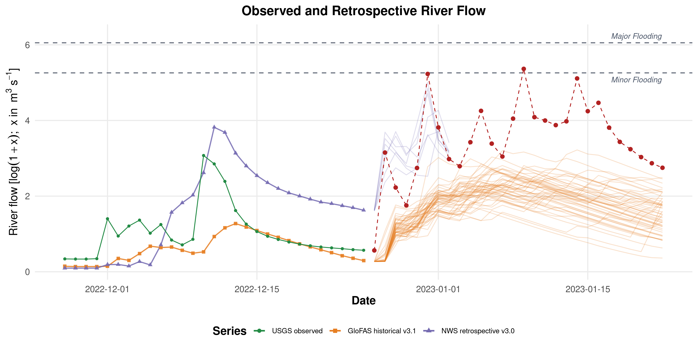

Setup / Inputs
fig:sanlorenzo
Role: Study-setting figure
TeX line: 251
Manuscript path: figures/manuscript/site_context_usgs.png
Artifact source: artifacts/five_cutoff_setup_support/20221225_exal_m_t1/figures/usgs.png
Source class: setup_support_v2_representative
Current-model-output wired: yes
Note: Representative 2022-12-25 setup/support figure from the canonical five-cutoff support bundle

fig:covariates
Role: Covariate setup figure
TeX line: 272
Manuscript path: figures/manuscript/covariate_context_precip_soil_gdpc.png
Artifact source: artifacts/five_cutoff_setup_support/20221225_exal_m_t1/figures/precip_soilmoisture_climatePC1_faceted_labeled.png
Source class: setup_support_v2_representative
Current-model-output wired: yes
Note: Representative 2022-12-25 setup/support figure from the canonical five-cutoff support bundle

fig:retrospectives
Role: Retrospective-product setup figure
TeX line: 287
Manuscript path: figures/manuscript/retrospective_products_context.png
Artifact source: artifacts/five_cutoff_setup_support/20221225_exal_m_t1/figures/retrospective_log_discharge_plot_faceted.png
Source class: setup_support_v2_representative
Current-model-output wired: yes
Note: Representative 2022-12-25 setup/support figure from the canonical five-cutoff support bundle

fig:ensembles
Role: Forecast-product setup figure
TeX line: 338
Manuscript path: figures/manuscript/forecast_products_context.png
Artifact source: artifacts/five_cutoff_setup_support/20221225_exal_m_t1/figures/forecats.png
Source class: setup_support_v2_representative
Current-model-output wired: yes
Note: Representative 2022-12-25 setup/support figure from the canonical five-cutoff support bundle
